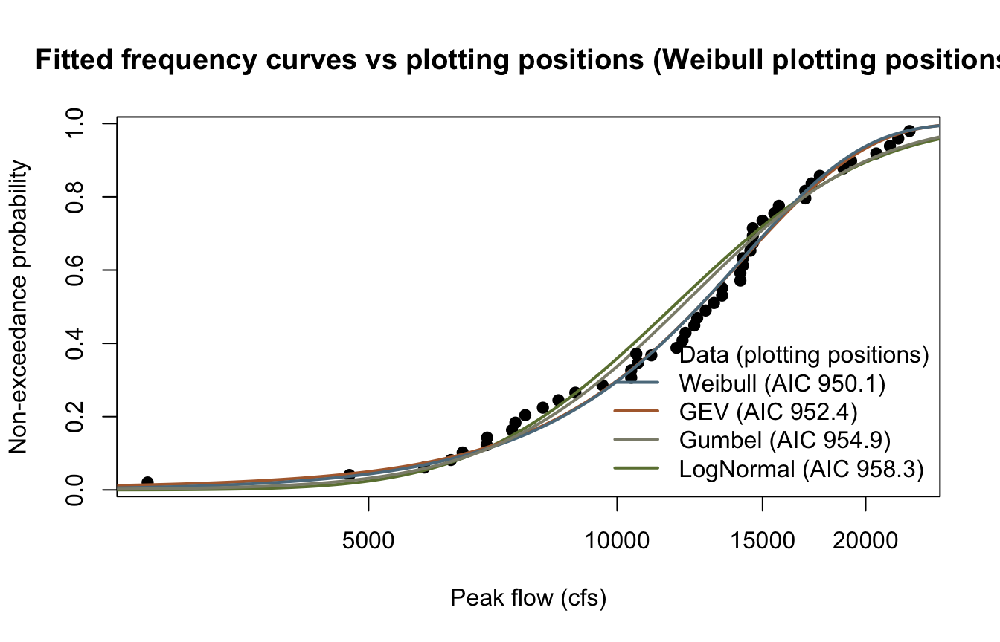
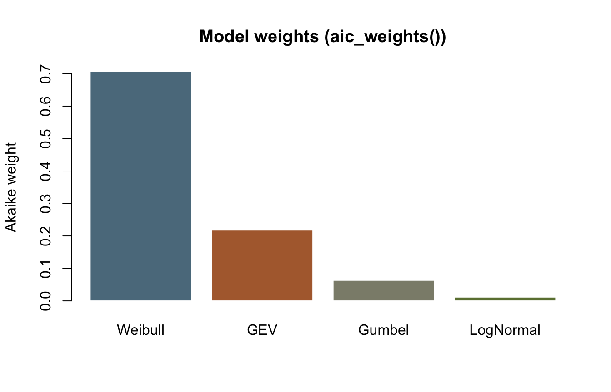

library(corehydror)12. Model evaluation
Example 21 fits LogNormal, GEV, and Weibull to a 48-year peak-flow record and ranks them by log-likelihood and AIC, noting that the upstream script’s Kolmogorov-Smirnov ranking “is not part of the ported API.” It now is: this example revisits the same record with the goodness-of-fit toolbox this phase adds – goodness_of_fit(), gof_test(), gof_rmse(), aic()/aic_weights() – and confirms the KS statistic agrees with the AIC ranking. It has no upstream counterpart: the USACE-RMC Numerics-Python-Examples repository has no dedicated model-comparison notebook.
What you’ll learn
- Fit several candidate distributions to one flood series and score each with a goodness-of-fit test statistic (
gof_test), not just log-likelihood. - Rank candidates with
aic()/aic_weights(), and read an Akaike weight as “the probability this model is the best of the set, given the set.” - Score a fitted quantile curve against the data with
goodness_of_fit()’s general continuous metrics (NSE, KGE, R-squared, …), the same metrics used to evaluate any modeled-versus-observed series, not just a distribution fit. classification_metrics()for a binary comparison, illustrated (a little artificially) on an above/below-median split.
Setup
The data
The same 48 years of annual peak flows (cfs) as example 21.
peak_flows <- c(
6290, 2700, 13100, 16900, 14600, 9600, 7740, 8490, 8130, 12000,
17200, 15000, 12400, 6960, 6500, 5840, 10400, 18800, 21400, 22600,
14200, 11000, 12800, 15700, 4740, 6950, 11800, 12100, 20600, 14600,
14600, 8900, 10600, 14200, 14100, 14100, 12500, 7530, 13400, 17600,
13400, 19200, 16900, 15500, 14500, 21900, 10400, 7460
)
n <- length(peak_flows)
cat(sprintf("n = %d peak flows, %s to %s cfs\n",
n, format(min(peak_flows), big.mark = ","), format(max(peak_flows), big.mark = ",")))n = 48 peak flows, 2,700 to 22,600 cfsFit four candidates
LogNormal and Weibull by maximum likelihood, GEV by L-moments (as in example 21), plus Gumbel by maximum likelihood as a fourth candidate.
ln <- dist_fit("LogNormal", peak_flows, method = "mle")
gev <- dist_fit("GeneralizedExtremeValue", peak_flows, method = "lmom")
wb <- dist_fit("Weibull", peak_flows, method = "mle")
gum <- dist_fit("Gumbel", peak_flows, method = "mle")
models <- list(LogNormal = ln, GEV = gev, Weibull = wb, Gumbel = gum)Rank with goodness-of-fit test statistics
gof_test() mirrors the C# GoodnessOfFit class’s Kolmogorov-Smirnov D and Anderson-Darling A-squared statistics for a fitted distribution against its data – smaller is a better fit for both. gof_rmse() compares the fitted quantiles at Weibull plotting positions to the sorted data. aic() needs only the parameter count and the log-likelihood dist_log_likelihood() already provides; aic_weights() turns a vector of AIC values into weights that sum to one, each reading as “the (relative) probability this is the best model of the set.”
aic()/gof_test()/gof_rmse() take one model at a time, so mapply/sapply build the table one candidate at a time – there is no vectorized “rank these four” verb, deliberately: the toolbox mirrors the C# statics one call at a time, and ranking is a few lines of R on top.
k <- sapply(models, function(d) length(dist_params(d)))
log_lik <- sapply(models, function(d) dist_log_likelihood(d, peak_flows))
AICs <- mapply(aic, k, log_lik)
ks <- sapply(models, function(d) gof_test(peak_flows, d, test = "ks"))
ad <- sapply(models, function(d) gof_test(peak_flows, d, test = "ad"))
rmse_v <- sapply(models, function(d) gof_rmse(peak_flows, d))
weights <- aic_weights(AICs)
ranking <- data.frame(
Model = names(models), k = k, LogLik = log_lik, AIC = AICs,
KS = ks, AD = ad, RMSE = rmse_v, AkaikeWeight = weights,
row.names = NULL
)
ranking <- ranking[order(ranking$AIC), ]
print(ranking, digits = 6) Model k LogLik AIC KS AD RMSE AkaikeWeight
3 Weibull 2 -473.046 950.092 0.0663874 0.251832 547.453 0.7070116
2 GEV 3 -473.223 952.445 0.0696935 0.250618 481.527 0.2179407
4 Gumbel 2 -475.457 954.915 0.1131102 0.586797 719.701 0.0634083
1 LogNormal 2 -477.152 958.305 0.1345110 0.841572 874.869 0.0116395Weibull wins on AIC, KS, and RMSE, carrying 71% of the Akaike weight – confirming, with an actual goodness-of-fit test statistic this time, exactly what example 21 found by log-likelihood alone: “Weibull edges out GEV, and LogNormal trails.” Anderson-Darling is the one holdout: it weights tail deviations more heavily than KS, and by that measure GEV’s A-squared (0.2506) edges Weibull’s (0.2518) – the two are close enough, and the metrics disagree closely enough, that this is a real illustration of why a ranking should look at more than one statistic rather than an example built to make every metric agree.
Score the winning quantile curve
goodness_of_fit() is the general-purpose continuous-metrics verb: any modeled-versus-observed pair, not just a fitted distribution. Comparing the Weibull quantile curve at the data’s own plotting positions to the sorted observations treats the frequency curve itself as “the model” and scores it with NSE, KGE, R-squared and friends – the standard hydrologic model-evaluation metrics, repurposed here for a frequency curve.
pp <- plotting_positions(n)
sorted_flows <- sort(peak_flows)
modeled <- dist_quantile(wb, pp)
fit_scores <- goodness_of_fit(sorted_flows, modeled)
print(round(fit_scores, 4)) rmse mse mae mape smape nse
553.4850 306345.6538 446.4293 4.5060 4.3044 0.9859
log_nse kge kge_mod pbias rsr pearson
0.9751 0.9355 0.9365 -0.1088 0.1188 0.9947
r_squared d d_mod d_ref ve
0.9894 0.9962 0.9392 0.9407 0.9648 NSE above 0.98 and KGE above 0.93 both say the same thing the AIC ranking already said: the Weibull quantile curve tracks the sorted record closely apart from the usual upper-tail spread.
A binary comparison: classification_metrics()
classification_metrics() compares two already-binary label vectors – it has no threshold argument, in R or in C#, so the labels are built by hand first. This is a contrived use for a frequency curve (nothing about flood-frequency analysis is naturally binary), but it is the only public verb that exposes the C# GoodnessOfFit classification statics, so it is worth seeing once: label each year “above the median flow” or not, in both the observed record and the fitted quantile curve at the same rank, and score the agreement.
med <- median(peak_flows)
obs_label <- as.numeric(sorted_flows > med)
mod_label <- as.numeric(modeled > med)
cls <- classification_metrics(obs_label, mod_label)
print(round(cls, 4)) accuracy precision recall f1
95.8333 1.0000 0.9167 0.9565
specificity balanced_accuracy
1.0000 0.9583 Plot: fitted curves against plotting positions
colors <- c(LogNormal = "#6b7f3f", GEV = "#b06a3b", Weibull = "#5b7a8c", Gumbel = "#8c8c7a")
x_grid <- seq(min(peak_flows) * 0.8, max(peak_flows) * 1.1, length.out = 500)
plot(sorted_flows, pp,
pch = 19, col = "black", log = "x",
xlab = "Peak flow (cfs)", ylab = "Non-exceedance probability",
main = "Fitted frequency curves vs plotting positions (Weibull plotting positions)"
)
for (name in names(models)) {
lines(x_grid, dist_cdf(models[[name]], x_grid), col = colors[[name]], lwd = 2)
}
legend("bottomright",
legend = c("Data (plotting positions)", sprintf("%s (AIC %.1f)", ranking$Model, ranking$AIC)),
pch = c(19, NA, NA, NA, NA), lty = c(NA, 1, 1, 1, 1), lwd = c(NA, 2, 2, 2, 2),
col = c("black", colors[ranking$Model]), bty = "n"
)
barplot(weights[order(AICs)],
names.arg = names(models)[order(AICs)],
col = colors[names(models)[order(AICs)]], border = "white",
ylab = "Akaike weight", main = "Model weights (aic_weights())"
)
Key takeaways
gof_test()andgof_rmse()give a fitted distribution the same KS/AD/RMSE ranking the C#GoodnessOfFitclass always offered, closing the gap example 21 noted.aic_weights()turns a table of AIC values into normalized weights – useful directly, and the same weightsfit_distributions()’s composite-model machinery consumes internally.goodness_of_fit()is not distribution-specific: it scores any two equal-length numeric series, so it works as well on a frequency curve as on a rainfall-runoff hydrograph.classification_metrics()fills out the C#GoodnessOfFitsurface for binary comparisons, even though flood-frequency analysis rarely needs one.
Reproduction check
No upstream literals exist for this example (it has no upstream counterpart), so every value below is an internal-consistency and cross-language check: the ranking is self-consistent (AIC order matches the KS order here, and matches the AD order everywhere except the top two, as discussed above), and the literals are the exact values the Python notebook prints, asserted at 1e-15 relative tolerance (R’s decimal parser can land one ulp away from the written literal; the seeded/deterministic values themselves are bit-exact across languages).
near <- \(x, literal) abs(x / literal - 1) < 1e-15
stopifnot(
# Ranking is self-consistent: AIC order (Weibull, GEV, Gumbel, LogNormal) matches the KS order
# over the same four models; AD agrees except it swaps the top two (see the prose above).
identical(order(AICs), order(ks)),
identical(order(AICs)[3:4], order(ad)[3:4]),
setequal(order(AICs)[1:2], order(ad)[1:2]),
ranking$Model[1] == "Weibull",
sum(weights) - 1 < 1e-12,
# Cross-language identity: the Python notebook asserts these same literals.
near(AICs[["LogNormal"]], 958.30496639602507),
near(AICs[["GEV"]], 952.44533103738274),
near(AICs[["Weibull"]], 950.09168256535804),
near(AICs[["Gumbel"]], 954.91458850922629),
near(ks[["Weibull"]], 0.06638744856290868),
near(ad[["Weibull"]], 0.2518324119771691),
near(rmse_v[["Weibull"]], 547.45273890460226),
near(weights[3], 0.7070115798971689), # Weibull's own weight, position 3 in `models`
near(fit_scores[["nse"]], 0.985895395879688),
near(fit_scores[["kge"]], 0.93549912169381888),
near(fit_scores[["r_squared"]], 0.98937885175430651),
near(fit_scores[["pearson"]], 0.99467524939263796),
near(cls[["accuracy"]], 95.833333333333329)
)
cat("All reproduction checks passed.\n")All reproduction checks passed.